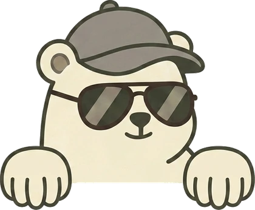
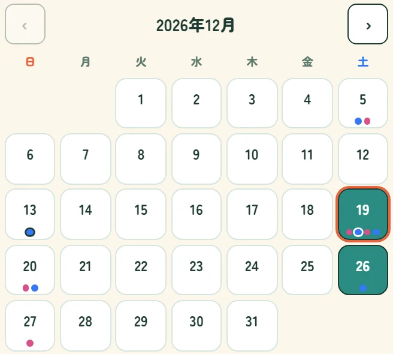
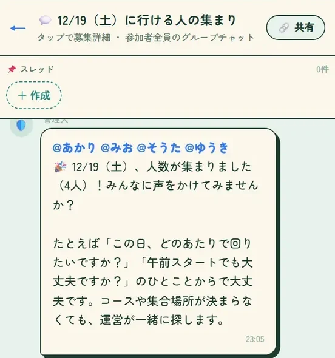

ゴルトモ20〜30代の
ゴルフ友達マッチング
誘ってくれた友達が、いなくなった人へ
いつも誘ってくれた友達が
ゴルフに行けなくなった。
妊娠に転勤、部署の異動。
土日のゴルフだけ、ぽっかり空いた。
ひとつでも
わかる！なら
ゴルフは、あの子に
おまかせだった
始めたのは、あの子に誘われて。
予約も車も、ぜんぶお任せだった。ある日、うれしい報告。
ゴルフは、しばらくお休みに。練習場には、ひとりで行く。
でもコースは、もう半年。
ためしに押してみて
誘い方は
知らなくていい
空いてる土日を押すだけ。
同じ日に3人そろうと、その日のチャットが始まります
※ここに出ている人は見本です。実際は、同じ20〜30代の会員が並びます。
使い方は3つだけ
次のゴルフが
決まるまで
1LINEで登録
アプリのダウンロードは不要。30秒で終わります
2行ける日を押す
空いている土日を、何日でも

行ける日のカレンダー（見本データ） 33人そろったら、チャットへ
運営がメンバーを紹介。コースが決まらなくても一緒に探します

その日のグループチャット（見本データ） また土曜の朝が
楽しみになる
- 押しておくのは空いてる土日だけ
- 同じ日の20〜30代とチャットへ
- 気が合えば次の約束まで
登録は30秒・無料
まずは来月の土日
押してみよ。
行ける日のカレンダーいま募集中のラウンド
LINELINEで行ける日を押す（無料）
押すとLINEが開きます。登録は30秒、無料です。
合わなければ、LINEのブロックでいつでもやめられます。
よくある質問
- ひとりで登録しても大丈夫？
- ほとんどの人が、ひとりで参加しています。
- 女性ひとりでも平気？
- 同じ日の人の性別と年齢が、先に見えます。
- お金はかかる？
- アプリは無料。かかるのはプレー代だけです。